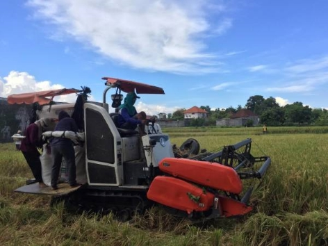

Teknologi pertanian terbaru di Indonesia bisa dikatakan berkembang cukup pesat. Tentu saja teknologi ini telah menarik perhatian berbagai kalangan, bahkan tidak hanya orang-orang yang bergerak di bidang pertanian saja, orang-orang awam juga penasaran dengan teknologi penemuan pertanian terbaru itu.
Fenomena baru ini terjadi berkat kontribusi besar dari lingkungan universitas, pemerintah, bahkan perusahaan swasta. Tiga lingkaran itu (universitas, pemerintahan dan perusahaan swasta) berlomba-lomba mengembangkan tekonologi pertanian menjadi lebih baik.
Meskipun beragam alat teknologi pertanian terbaru sudah dengan mudah ditemukan, anda juga masih bisa menemukan alat-alat tradisional seperti ani-ani, cangkul, sabit, garu, dan beberapa alat lainnya. Alat-alat yang membantu para petani tersebut sudah dari zaman dulu menjadi barang yang sangat bermanfaat untuk kehidupan petani. Namun, jika dibandingkan dengan alat-alat yang canggih sekarang ini, alat tradisional tersebut tentu akan kalah dalam segi kecepatan, kualitas, dan lain-lain.
I. Manfaat Kemajuan Teknologi Pertanian untuk Para Petani
• Memperoleh Benih Unggul
Teknologi pertanian terbaru tidak lepas dari perusahaan penghasil benih, dengan melibatkan alat teknologi penghasil benih modern diharapkan akan menghasilan produk benis yang modern. Misalnya seperti jagung hibrida sebagai benih yang terproduk dengan bantuan perkembangan teknologi pertanian. Karakter jagung hibrida ini nantinya memiliki kualitas yang baik, kualitas tonggol yang unggul, dan biji jagung yang semakin banyak.
• Menghasilkan Pupuk Kimia Terbaik
Perusahaan pupuk kimia dan obat pertanian kini menggunakan teknologi modern untuk menghasilkan kualitas pupuk kimia dan obat pertanian terbaik. Dengan menggunakan pupuk tersebut, tentu kualitas hasil panen pun akan semakin meningkat. Omset petani akan bertambah, konsep pemerintah tentang memanusiakan petani akan segera terwujud, derajat petani akan naik, dan petani akan naik kelas sosial di masyarakat.
• Adanya Alat Pertanian Modern
Alat pertanian memiliki pengaruh besar dalam produktivitas produk yang dihasil dari bertani. Penggunaan alat yang canggih pun akan berpengaruh pada kegiatan bercocok tanam, sehingga pekerjaan menjadi lebih cepat yang tentunya hasil panin pun akan lebih banyak. Selain lebih cepat, tenaga yang digunakan pun tidak akan sebesar penggunaan alat yang tradisional jika dilakukan dengan teknologi pertanian terbaru.
• Meningkatkan pendapatan petani
Dengan adanya teknologi yang berperan penuh dalam pertanian, tentu akan berpengaruh juga pada pendapatan petani. Seperti halnya penggunaan benih unggul yang akan menghasilkan padi yang berkualitas serta jumlah yang dihasilkan dari setiap tungkai nya pu akan lebih banyak dari biasanya. Dengan demikian hasil panen yang didapatkan dari penggunaan benih unggul akan meningkatkan nilai jual dari biasanya.
• Meningkatkan kemampuan petani
Melalui teknologi pertanian yang paling baru, tentu akan menghasilkan alat yang canggih dan modern untuk kegiatan bercocok tanam. Secara otomatis kemampuan petani akan mengalami perubahan, adanya alat modern memberikan tuntutan baru bagi petani untuk bisa menggunakannya. Dengan demikian petani harus bisa menyesuaikan perkembangan teknologi pertanian yang ada pada saat ini.
II. Jenis Alat Untuk Mendukung Teknologi Pertanian Terbaru
• Alat penanam padi jarwo transplanter
Alat ini direkomendasikan oleh LitBang (Penelitian dan pengembangan) Kementrian Pertanian, konsep dari jarwo alias jajar legowo dari jawa timur adalah untuk memberikan jarak yang pas antara padi yang satu dengan padi lainnya. Menurut penelitian, alat jarwo ini mampu meningkatkan produksi padi sebanyak 30%.
• Mesin pemanen padi indo combine harvester
Kelebihan dari alat canggih ini diantaranya mampu beroperasi di lahan yang basah, memiliki diameter yang lebih rendah, tusuk panen yang dihasilkan tidak lebih dari 1%, dan kapasitas kerja yang terbilang cepat karena dalam waktu 4 sampai 6 jam per hektar.
III. Dampak Positif Dari Teknologi Pertanian Terbaru
1. Mempercepat pekerjaan petani sehingga hal ini meringankan kerja petani di sawah, contohnya saja saat mengolah lahan yang luas dulu petani menggunakan kerbau sekarang sudah menggunakan traktor.
2. Dampak yang kedua adalah meningkatkan hasil produksi dalam pertanian. Dampak positif ini ontohnya dengan memakai sistem pengawinan tanaman jagung maka hasilnya yaitu jagung hibrida menjadi lebih banyak dan bentuknya secara fisik pun lebih bagus.
Sumber: mediatani.co
(Iwan/Bpp Banjar)